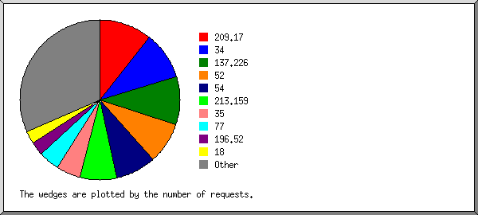
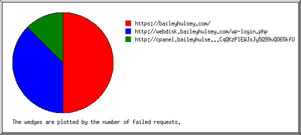
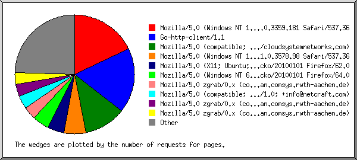
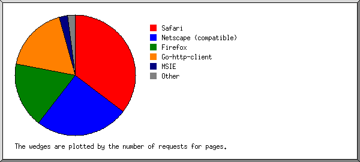
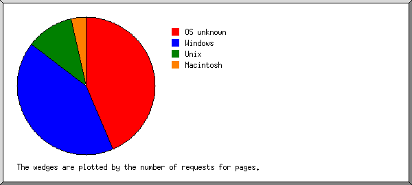
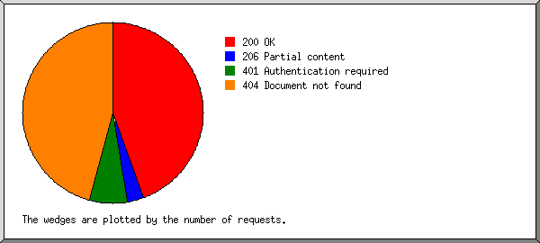
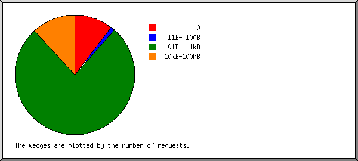
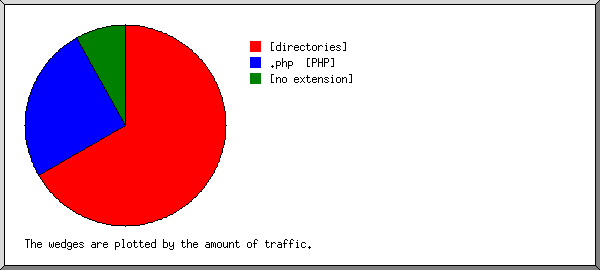
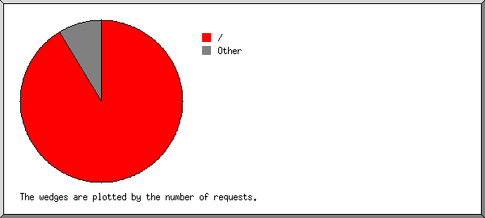

Web Server Statistics for baileyhulsey.com
Web Server Statistics for baileyhulsey.com
Program started on Sat, Nov 30 2019 at 6:04 AM.
Analyzed requests from Thu, May 23 2019 at 5:55 PM to Sat, Nov 30 2019 at 5:07 AM (190.47 days).
Web Server Statistics for baileyhulsey.comProgram started on Sat, Nov 30 2019 at 6:04 AM.
Analyzed requests from Thu, May 23 2019 at 5:55 PM to Sat, Nov 30 2019 at 5:07 AM (190.47 days).
(Go To: Top | General Summary | Monthly Report | Daily Summary | Hourly Summary | Domain Report | Organization Report | Failed Referrer Report | Referring Site Report | Browser Report | Browser Summary | Operating System Report | Status Code Report | File Size Report | File Type Report | Directory Report | Request Report)
Figures in parentheses refer to the 7-day period ending Nov 30 2019 at 6:04 AM.
Successful requests: 583 (14)
Average successful requests per day: 3 (1)
Successful requests for pages: 573 (14)
Average successful requests for pages per day: 3 (1)
Failed requests: 717 (2)
Distinct files requested: 14 (2)
Distinct hosts served: 356 (4)
Data transferred: 728.80 kilobytes (5.49 kilobytes)
Average data transferred per day: 3.83 kilobytes (803 bytes)
(Go To: Top | General Summary | Monthly Report | Daily Summary | Hourly Summary | Domain Report | Organization Report | Failed Referrer Report | Referring Site Report | Browser Report | Browser Summary | Operating System Report | Status Code Report | File Size Report | File Type Report | Directory Report | Request Report)
Each unit ( ) represents 4 requests for pages or part thereof.
) represents 4 requests for pages or part thereof.
| month | #reqs | #pages | |
|---|---|---|---|
| May 2019 | 23 | 14 |  |
| Jun 2019 | 64 | 64 |  |
| Jul 2019 | 94 | 94 |  |
| Aug 2019 | 110 | 109 | |
| Sep 2019 | 71 | 71 |  |
| Oct 2019 | 130 | 130 |  |
| Nov 2019 | 91 | 91 | |
Busiest month: Oct 2019 (130 requests for pages).
(Go To: Top | General Summary | Monthly Report | Daily Summary | Hourly Summary | Domain Report | Organization Report | Failed Referrer Report | Referring Site Report | Browser Report | Browser Summary | Operating System Report | Status Code Report | File Size Report | File Type Report | Directory Report | Request Report)
Each unit () represents 3 requests for pages or part thereof.
| day | #reqs | #pages | |
|---|---|---|---|
| Sun | 54 | 53 | |
| Mon | 65 | 62 | |
| Tue | 82 | 80 | |
| Wed | 58 | 58 | |
| Thu | 81 | 79 | |
| Fri | 112 | 110 | |
| Sat | 131 | 131 | |
(Go To: Top | General Summary | Monthly Report | Daily Summary | Hourly Summary | Domain Report | Organization Report | Failed Referrer Report | Referring Site Report | Browser Report | Browser Summary | Operating System Report | Status Code Report | File Size Report | File Type Report | Directory Report | Request Report)
Each unit () represents 2 requests for pages or part thereof.
| hour | #reqs | #pages | |
|---|---|---|---|
| 0 | 15 | 14 | |
| 1 | 17 | 17 | |
| 2 | 31 | 31 | |
| 3 | 21 | 21 | |
| 4 | 46 | 46 | |
| 5 | 37 | 37 | |
| 6 | 25 | 25 | |
| 7 | 21 | 21 | |
| 8 | 38 | 36 | |
| 9 | 36 | 36 | |
| 10 | 35 | 35 | |
| 11 | 50 | 49 | |
| 12 | 31 | 31 | |
| 13 | 40 | 40 | |
| 14 | 31 | 29 | |
| 15 | 21 | 21 | |
| 16 | 12 | 12 | |
| 17 | 17 | 16 | |
| 18 | 10 | 10 | |
| 19 | 15 | 14 | |
| 20 | 10 | 8 | |
| 21 | 7 | 7 | |
| 22 | 11 | 11 | |
| 23 | 6 | 6 | |
(Go To: Top | General Summary | Monthly Report | Daily Summary | Hourly Summary | Domain Report | Organization Report | Failed Referrer Report | Referring Site Report | Browser Report | Browser Summary | Operating System Report | Status Code Report | File Size Report | File Type Report | Directory Report | Request Report)
Listing domains, sorted by the amount of traffic.
| #reqs | %bytes | domain |
|---|---|---|
| 583 | 100% | [unresolved numerical addresses] |
(Go To: Top | General Summary | Monthly Report | Daily Summary | Hourly Summary | Domain Report | Organization Report | Failed Referrer Report | Referring Site Report | Browser Report | Browser Summary | Operating System Report | Status Code Report | File Size Report | File Type Report | Directory Report | Request Report)

Listing the top 20 organizations by the number of requests, sorted by the number of requests.
| #reqs | %bytes | organization |
|---|---|---|
| 81 | 4.96% | 34 |
| 73 | 4.40% | 54 |
| 70 | 4.30% | 137.226 |
| 58 | 3.83% | 209.17 |
| 39 | 1.92% | 52 |
| 33 | 2.13% | 77 |
| 25 | 1.34% | 35 |
| 21 | 1.22% | 18 |
| 18 | 138.246 | |
| 16 | 1.06% | 60 |
| 12 | 0.66% | 46 |
| 11 | 0.75% | 192.95 |
| 9 | 11.06% | 51 |
| 9 | 0.62% | 87 |
| 8 | 0.37% | 45 |
| 7 | 0.46% | 93 |
| 7 | 0.42% | 62.4 |
| 6 | 27.26% | 98 |
| 5 | 0.25% | 167.114 |
| 4 | 0.26% | 38 |
| 71 | 32.72% | [not listed: 42 organizations] |
(Go To: Top | General Summary | Monthly Report | Daily Summary | Hourly Summary | Domain Report | Organization Report | Failed Referrer Report | Referring Site Report | Browser Report | Browser Summary | Operating System Report | Status Code Report | File Size Report | File Type Report | Directory Report | Request Report)

Listing referring URLs, sorted by the number of failed requests.
| #reqs | URL |
|---|---|
| 4 | https://baileyhulsey.com/ |
| 1 | http://cpanel.baileyhulsey.com/.well-known/acme-challenge/ihfM1Sx74My9HO70iFCqQKzPlEWJsJy5Q99vQO65kfU |
(Go To: Top | General Summary | Monthly Report | Daily Summary | Hourly Summary | Domain Report | Organization Report | Failed Referrer Report | Referring Site Report | Browser Report | Browser Summary | Operating System Report | Status Code Report | File Size Report | File Type Report | Directory Report | Request Report)
Listing referring sites, sorted by the number of requests.
| #reqs | site |
|---|---|
| 2 | https://baileyhulsey.com/ |
(Go To: Top | General Summary | Monthly Report | Daily Summary | Hourly Summary | Domain Report | Organization Report | Failed Referrer Report | Referring Site Report | Browser Report | Browser Summary | Operating System Report | Status Code Report | File Size Report | File Type Report | Directory Report | Request Report)

Listing browsers with at least 1 request for a page, sorted by the number of requests for pages.
| #reqs | #pages | browser |
|---|---|---|
| 153 | 153 | Mozilla/5.0 (Windows NT 10.0; Win64; x64)AppleWebKit/537.36 (KHTML, like Gecko) Chrome/66.0.3359.181 Safari/537.36 |
| 90 | 90 | Go-http-client/1.1 |
| 58 | 58 | Mozilla/5.0 (compatible; Nimbostratus-Bot/v1.3.2; http://cloudsystemnetworks.com) |
| 42 | 42 | Mozilla/5.0 (Windows NT 10.0; Win64; x64) AppleWebKit/537.36 (KHTML, like Gecko) Chrome/71.0.3578.98 Safari/537.36 |
| 38 | 38 | Mozilla/5.0 (Windows NT 6.1; Win64; x64; rv:64.0) Gecko/20100101 Firefox/64.0 |
| 24 | 24 | Mozilla/5.0 zgrab/0.x (compatible; Researchscan/t12sns; +http://researchscan.comsys.rwth-aachen.de) |
| 23 | 23 | Mozilla/5.0 zgrab/0.x (compatible; Researchscan/t13rl; +http://researchscan.comsys.rwth-aachen.de) |
| 23 | 23 | Mozilla/5.0 zgrab/0.x (compatible; Researchscan/t12ca; +http://researchscan.comsys.rwth-aachen.de) |
| 21 | 21 | Mozilla/5.0 (Windows NT 6.1; Win64; x64) AppleWebKit/537.36 (KHTML, like Gecko) Chrome/40.0.2214.85 Safari/537.36 |
| 18 | 18 | Mozilla/5.0 (Windows NT 6.1; WOW64) AppleWebKit/537.36 (KHTML, like Gecko) Chrome/36.0.1985.143 Safari/537.36 |
| 17 | 17 | Mozilla/5.0 (X11; Ubuntu; Linux x86_64; rv:58.0) Gecko/20100101 Firefox/58.0 |
| 16 | 16 | Mozilla/5.0 (Macintosh; Intel Mac OS X 10.11; rv:47.0) Gecko/20100101 Firefox/47.0 |
| 10 | 10 | Mozilla/5.0 (compatible; NetcraftSurveyAgent/1.0; +info@netcraft.com) |
| 4 | 4 | python-requests/2.21.0 |
| 4 | 4 | Mozilla/5.0 (X11; Linux x86_64) AppleWebKit/537.36 (KHTML, like Gecko) Chrome/58.0.3029.110 Safari/537.36 |
| 3 | 3 | Mozilla/5.0 (Windows NT 10.0; Win64; x64) AppleWebKit/537.36 (KHTML, like Gecko) Chrome/71.0.3578.98 Safari/537.36 3021 |
| 2 | 2 | Mozilla/5.0 (Windows NT 6.1; WOW64) AppleWebKit/537.36 (KHTML, like Gecko) Chrome/34.0.1847.131 Safari/537.36 |
| 2 | 2 | Mozilla/5.0 (Windows NT 10.0; Win64; x64) AppleWebKit/537.36 (KHTML, like Gecko) Chrome/69.0.3497.100 Safari/537.36 |
| 2 | 2 | Mozilla/5.0 (X11; Linux x86_64) AppleWebKit/537.36 (KHTML, like Gecko) Chrome/75.0.3770.142 Safari/537.36 |
| 2 | 2 | Mozilla/5.0 (X11; Linux x86_64) AppleWebKit/537.36 (KHTML, like Gecko) Chrome/76.0.3809.100 Safari/537.36 |
| 1 | 1 | Mozilla/5.0 (Windows NT 6.1; WOW64) AppleWebKit/537.36 (KHTML, like Gecko) Chrome/27.0.1453.93 Safari/537.36 |
| 1 | 1 | Mozilla/5.0 (Windows; U; Windows NT 6.0; en-US) AppleWebKit/525.19 (KHTML, like Gecko) Chrome/0.2.151.0 Safari/525.19 |
| 1 | 1 | Mozilla/4.0 (compatible; MSIE 6.0; Windows NT 5.0; .NET CLR 1.0.3705) |
| 1 | 1 | Mozilla/4.0 (compatible; MSIE 6.0; MSIE 5.5; Windows NT 5.0) Opera 7.02 Bork-edition [en] |
| 1 | 1 | Mozilla/5.0 (Windows NT x.y; Win64; x64; rv:10.0) Gecko/20100101 Firefox/10.0 |
| 1 | 1 | okhttp/4.1.0 |
| 1 | 1 | Mozilla/5.0 (X11; Ubuntu; Linux i686; rv:62.0.2) Gecko/20100101 Firefox/62.0.2 |
| 1 | 1 | Mozilla/5.0 (Windows NT 6.1; Win64; x64) AppleWebKit/537.36 (KHTML, like Gecko) Chrome/74.0.3729.169 Safari/537.36 |
| 1 | 1 | Mozilla/5.0 (X11; U; Linux x86_64; de; rv:1.9.2.8) Gecko/20100723 Ubuntu/10.04 (lucid) Firefox/3.6.8 |
| 1 | 1 | Mozilla/4.0 (compatible; MSIE 6.0; Windows NT 5.2; .NET CLR 1.0.3705;) |
| 1 | 1 | Mozilla/5.0 (Windows NT 6.3; Win64; x64) AppleWebKit/537.36 (KHTML, like Gecko) Chrome/68.0.3440.106 Safari/537.36 |
| 1 | 1 | Mozilla/5.0 (Windows NT 10.0; Win64; x64) AppleWebKit/537.36 (KHTML, like Gecko) Chrome/64.0.3282.186 Safari/537.36 |
| 1 | 1 | Mozilla/5.0 (Windows NT 10.0; Win64; x64; rv:64.0) Gecko/20100101 Firefox/64.0 |
| 1 | 1 | Mozilla/5.0 (Windows NT 10.0; Win64; x64) AppleWebKit/537.36 (KHTML, like Gecko) Chrome/71.0.3578.98 Safari/537.36 3007 |
| 1 | 1 | Mozilla/5.0 (Macintosh; Intel Mac OS X 10_11_6) AppleWebKit/537.36 (KHTML, like Gecko) Chrome/53.0.2785.116 Safari/537.36 |
| 1 | 1 | Mozilla/5.0 (Windows NT 6.3; Trident/7.0; rv:11.0) like Gecko |
| 10 | 0 | [not listed: 3 browsers] |
(Go To: Top | General Summary | Monthly Report | Daily Summary | Hourly Summary | Domain Report | Organization Report | Failed Referrer Report | Referring Site Report | Browser Report | Browser Summary | Operating System Report | Status Code Report | File Size Report | File Type Report | Directory Report | Request Report)

Listing browsers with at least 1 request for a page, sorted by the number of requests for pages.
| # | #reqs | #pages | browser |
|---|---|---|---|
| 1 | 266 | 256 | Safari |
| 265 | 255 | Safari/537 | |
| 1 | 1 | Safari/525 | |
| 2 | 138 | 138 | Netscape (compatible) |
| 3 | 90 | 90 | Go-http-client |
| 90 | 90 | Go-http-client/1 | |
| 4 | 75 | 75 | Firefox |
| 39 | 39 | Firefox/64 | |
| 17 | 17 | Firefox/58 | |
| 16 | 16 | Firefox/47 | |
| 1 | 1 | Firefox/10 | |
| 1 | 1 | Firefox/3 | |
| 1 | 1 | Firefox/62 | |
| 5 | 4 | 4 | python-requests |
| 4 | 4 | python-requests/2 | |
| 6 | 2 | 2 | MSIE |
| 2 | 2 | MSIE/6 | |
| 7 | 1 | 1 | Mozilla |
| 8 | 1 | 1 | okhttp |
| 1 | 1 | okhttp/4 | |
| 9 | 1 | 1 | Opera |
| 1 | 1 | Opera/7 |
(Go To: Top | General Summary | Monthly Report | Daily Summary | Hourly Summary | Domain Report | Organization Report | Failed Referrer Report | Referring Site Report | Browser Report | Browser Summary | Operating System Report | Status Code Report | File Size Report | File Type Report | Directory Report | Request Report)

Listing operating systems, sorted by the number of requests for pages.
| # | #reqs | #pages | OS |
|---|---|---|---|
| 1 | 298 | 291 | Windows |
| 211 | 204 | Windows NT | |
| 84 | 84 | Unknown Windows | |
| 2 | 2 | Windows 2000 | |
| 1 | 1 | Windows Server 2003 | |
| 2 | 233 | 233 | OS unknown |
| 3 | 27 | 27 | Unix |
| 27 | 27 | Linux | |
| 4 | 20 | 17 | Macintosh |
(Go To: Top | General Summary | Monthly Report | Daily Summary | Hourly Summary | Domain Report | Organization Report | Failed Referrer Report | Referring Site Report | Browser Report | Browser Summary | Operating System Report | Status Code Report | File Size Report | File Type Report | Directory Report | Request Report)

Listing status codes, sorted numerically.
| #reqs | status code |
|---|---|
| 529 | 200 OK |
| 54 | 206 Partial content |
| 3 | 401 Authentication required |
| 714 | 404 Document not found |
(Go To: Top | General Summary | Monthly Report | Daily Summary | Hourly Summary | Domain Report | Organization Report | Failed Referrer Report | Referring Site Report | Browser Report | Browser Summary | Operating System Report | Status Code Report | File Size Report | File Type Report | Directory Report | Request Report)

| size | #reqs | %bytes |
|---|---|---|
| 0 | 32 | |
| 1B- 10B | 0 | |
| 11B- 100B | 10 | 0.13% |
| 101B- 1kB | 527 | 33.04% |
| 1kB- 10kB | 0 | |
| 10kB-100kB | 14 | 66.83% |
(Go To: Top | General Summary | Monthly Report | Daily Summary | Hourly Summary | Domain Report | Organization Report | Failed Referrer Report | Referring Site Report | Browser Report | Browser Summary | Operating System Report | Status Code Report | File Size Report | File Type Report | Directory Report | Request Report)

Listing extensions with at least 0.1% of the traffic, sorted by the amount of traffic.
| #reqs | %bytes | extension |
|---|---|---|
| 573 | 54.56% | [directories] |
| 10 | 45.44% | [no extension] |
(Go To: Top | General Summary | Monthly Report | Daily Summary | Hourly Summary | Domain Report | Organization Report | Failed Referrer Report | Referring Site Report | Browser Report | Browser Summary | Operating System Report | Status Code Report | File Size Report | File Type Report | Directory Report | Request Report)
Listing directories with at least 0.01% of the traffic, sorted by the amount of traffic.
| #reqs | %bytes | directory |
|---|---|---|
| 583 | 100% | [root directory] |
(Go To: Top | General Summary | Monthly Report | Daily Summary | Hourly Summary | Domain Report | Organization Report | Failed Referrer Report | Referring Site Report | Browser Report | Browser Summary | Operating System Report | Status Code Report | File Size Report | File Type Report | Directory Report | Request Report)

Listing files with at least 20 requests, sorted by the number of requests.
| #reqs | %bytes | last time | file |
|---|---|---|---|
| 573 | 54.56% | Nov/30/19 5:07 AM | / |
| 94 | 11.44% | Nov/29/19 7:49 AM | /?38.145.113.85 |
| 23 | 1.06% | Jul/21/19 8:31 AM | /?34.208.155.83 |
| 18 | 0.91% | Jul/22/19 9:22 AM | /?199.229.249.169 |
| 12 | 0.64% | Aug/ 7/19 4:50 PM | /?66.249.75.3 |
| 10 | 45.44% | Aug/ 4/19 8:09 PM | [not listed: 1 file] |